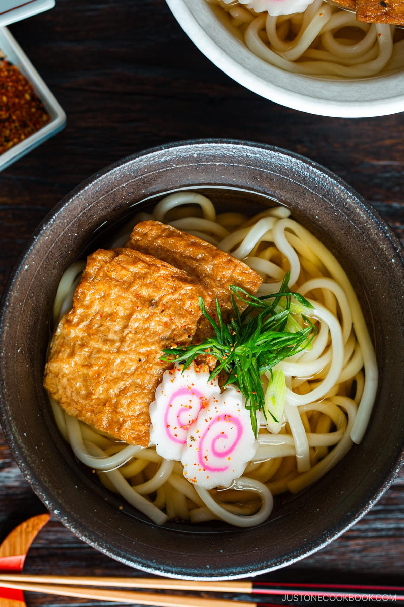

Kitsune Udon

Kitsune Udon is a Japanese noodle soup in dashi broth topped with seasoned fried tofu pouches, pink-swirl narutomaki fish cake, and sliced scallions. This comforting udon soup is one of the most popular and classic Japanese noodle recipes of all time.
If you’re looking for the ultimate Japanese comfort food that can lift up your mood any time of year, I can’t recommend enough cooking this bowl of Kitsune Udon (Noodle Soup) (きつねうどん). It’s a humble dish, yet so comforting and satisfying.
The rich broth, chewy noodles, and fried tofu pouches—everything comes together so nicely that you just want to hold your face above the bowl and let the aroma envelop you. It’s so simple and quick to make this kitsune udon recipe, so there is no excuse not to try it!